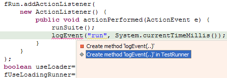
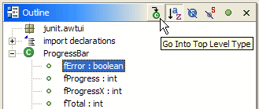
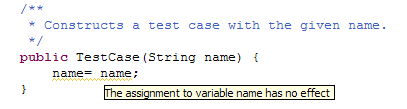
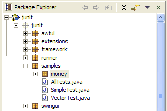
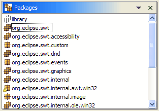
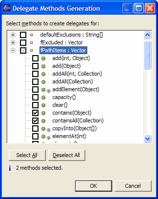
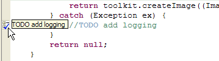

[This section should make interesting reading for an end user of Eclipse 2.0
who has just switched to 2.1 (or is contemplating switching). It should inform
them the most interesting and most significant visible changes that came along
with 2.1. The section should be complete, in that no interesting, significant,
visible change should go unmentioned. It differs in tone from the Tips and
Tricks section in that it only covers things that are new for 2.1, and that it
only deals with things that users would feel like was a significant improvement.
Each item should stand by itself, so that the items can be easily rearranged and
subsetted. Screen snaps should be GIFs and must be no wider than 466 pixels.]
[This section is still preliminary. The material here is lifted from the M2
through M5 "New and Noteworthy" bulletins.]
[Formatting changes: add horizontal line between each item; change font and
size throughout.]
|
|
User configurable hover
help |
You can configure the Hover help in the Java
editor via the Java / Editor preference page.

|
|
| Smart typing in Java code |
There is a new preference page (Java / Editor / Typing) for controlling
automatic closing of parentheses, brackets, strings, and comments, for
smart wrapping of strings, and other helpful Java-specific editor behavior.

|
|
| Customizable error indicators |
The Java editor now offers improved customizability for the visual appearance
of errors, warning, tasks, etc. These preference settings are found on
the Java / Editor / Annotations panel.

|
|
| Sticky hovers |
You can open a hover in a scrollable and resizable window by pressing
F2. You can select and copy content from this window.

|
|
|
Prominent status
indication |
Both the Default Text editor and
the Java editor now display a prominent marker at the top of the right frame
to indicate that the file contains errors or warnings.

|
|
|
Find in file
|
The Search menu group contains a
new command (Occurrences in File) to search for all occurrences of
types, fields, methods and local variables inside the compilation unit or
class file declared the element. Consistent with other search commands,
markers are generated and presented as annotations in the editor. Entries
in the Search Results view have different icons for read and write access.
In this example you see the search results for "fName" in "TestCase.java".

|
|
|
More Quick Fixes
|
There are now Quick Fixes for additional Java problems. Click the light
bulb in the left margin of the Java editor, press Ctrl+1 or select Edit
> Quick Fix from the menu to:
- Create missing constructors
- Remove unused private methods/fields or
types
- Fix ambiguous imports (also suggests Organize
Imports)
- Create method in outer type (for methods
in anonymous classes)
- Add stubs for unimplemented methods
- Add either a catch clause or a throws declaration to deal with an
uncaught exception
- Remove a catch clause to deal with an exception no longer thrown
- Add unimplemented abstract methods
Other compiler-detected problems that can be fixed using Quick Fix include:
- Instance variable used in a static context
- Declaration of an abstract method in a non-abstract type
- Non-visible method, field, type, or import.
- Not externalized strings

|
|
|
Quick Assist
|
The Quick Fix actions are now available even when there are no errors.
Position the caret in an identifier and press Ctrl+1 (Edit > Quick
Fix) to invoke Quick Assist.
|
|
| Code completion improvements |
The Java compiler has improved the rating of the relevance of a proposal
based on the type expected in the context. For instance, for StringBuffer
sb= new [code assist], StringBuffer now appears first
on the list. Below is another example:

|
|
|
Java keyword
completion |
Code assist in the Java editor
now provides completion on keywords. |
|
| Improved Java outline view |
You can adjust the Java outline to show just the members of the compilation
unit's main type by pressing the  button
(Go Into Top Level Type) in the Outline view toolbar. button
(Go Into Top Level Type) in the Outline view toolbar.

|
|
| Hyper-linked Java code |
While hovering over Java code, pressing the Ctrl key and moving the mouse
turns class, method, and field identifiers into clickable links to the
corresponding declaration. This option can be configured via the Java
/ Editor / Navigation panel.

|
|
| Scroll to the next member |
Use Ctrl + Shift + Arrow Down (Navigate >
Go To > Next Member) and Ctrl + Shift + Arrow Up (Navigate
> Go To > Previous Member) in the Java editor to quickly
navigate between member methods, fields, initializers, and types. |
|
| More errors detected on the fly |
The Java editor now annotates more error types,
including uncaught exceptions and unused variables, which require detailed
flow analysis.

|
|
|
In-place outlines
|
Press Ctrl+F3 (Navigate
> Open Structure) in the Java editor to pop up an in-place outline
of the element at the current cursor position. Or press Ctrl+O (Edit
> Open Structure) to pop up an in-place outline of the current source
file.

|
|
|
Hover information in editor
overview |
The Java editor overview ruler (on the right side of the frame) now shows hover information for problem annotations.

|
|
|
Go to last edit
position |
Press Ctrl+Q (Navigate
> Go to Last Edit Location) in any text-based editor to take you
back to the location of your last change. When the Editor Navigation action set is enabled,
a button marked  appears in the toolbar. appears in the toolbar. |
|
|
Class file editor
|
The Class File Editor has
caught up with the Compilation Unit Editor. It now supports cursor-line
highlighting, line numbers, annotation highlighting, overview ruler, print
margin, semantic selection expansion, and keyboard navigation between the
members of the class file. |
|
|
Threads & Monitors view
|
The debugger's new Threads and Monitors view shows which threads
are holding locks and which are waiting to acquire locks.

|
|
|
Instance breakpoints & watchpoints
|
You can now set breakpoints &
watch points specific to a particular object instance. In the Variables
view, choose Instance Breakpoints... from the variables context menu.

|
|
|
Improved conditional breakpoints
|
A traditional conditional breakpoint
is triggered by a boolean expression evaluating to "true". It
is now possible to declare conditional breakpoints that are triggered whenever
the value of an expression changes. In addition, code assist is now available
when entering the condition.

|
|
|
Stepping into selections
|
The Java debugger now allows you to step into a single method within
a series of chained or nested method calls. Simply highlight the method
you wish to step into and select Step into Selection from the Java
editor context menu.

|
|
| New ways to create watch items
|
The Java debugger can now create watch items from the
Java editor by selecting an expression and using the Watch action
(available in the context menu, and in the Run menu). As well,
a watch item can be created by selecting a variable and using the Watch
action.
|
|
|
Step filters
|
Step filters are more convenient
to use now that a Step With Filters action has been added to the
debug toolbar and menu. As well, actions have been added to the debug context
menu to streamline the creation of step filters for the type or package
associated with the selected stack frame. |
|
|
Word wrap in Variables view
|
The details area of the debugger's
Variables and Expressions views now supports word wrap, available
from the view drop-down menu.

|
|
Stack trace
hyperlinks |
Java stack traces in the console now appear with hyperlinks. When you
place the mouse over a line in a stack trace, the pointer changes to the
hand and the stack trace is underlined. Pressing the mouse button opens
the associated Java source file and positions the cursor at the corresponding
line.

|
|
|
Console buffer size
|
The Console view now hangs on to only the most
recent N characters of output (default is 80K). The console buffer size
can be configured via the Debug > Console preference page. |
|
|
Filtering constants & statics
|
Two new actions are available in the pull-down menu of the Variables
view - Show Constants & Show Static Variables. These
actions toggle the visibility of static final and static variables.
|
|
|
Faster stepping
|
The performance of the debugger's Run > Step over (F6) action
has been improved. You should notice the difference when holding down
the F6 key or rapidly clicking the Step Over button.
|
|
|
Instruction pointer
|
When debugging, the Java editor now indicates the currently executing
with an arrow in the left margin. This arrow is solid for the top stack
frame and hollow for non-top stack frames.

|
|
| New Refactorings |
Many new refactoring actions are available:
- Move Instance Method: this refactoring allows you to move the
method to the declared class of one of the method's parameters, or to
the declared class of a field. This creates a new method and converts
the old method into a delegate (passing it a pointer to
this
if necessary).
- Push Members Down: this refactoring allows you to move a set
of methods and fields from a class to its subclasses.
- Inline Method: this refactoring inlines calls to a particular
Java method, either at a selected call site or everywhere the method
is called.
- Inline Constant: this refactoring inlines uses of a particular
Java static final field, either at a selected reference site or everywhere
the field is referenced.
- Extract Constant: this refactoring creates a static final field
from the selected expression and substitutes a field reference, and
optionally rewrites other places where the same expression occurs.
- Convert Local Variable to Field: this refactoring allows you
to turn a local variable into a field. If the variable is initialized
on creation, then the operation moves the initialization to the new
field's declaration or to the class's constructors.
- Convert Anonymous Class to Nested Class: if an anonymous inner
class in your code is too large, this refactoring will help you convert
it to a member class.
- Convert Member Type to Top Level Type: this refactoring creates
a new Java compilation unit for the selected member type, updating all
references as needed. For non-static member types, a field is added
to allow access to the former enclosing instance.
- Extract Interface: this refactoring creates a new interface
with a set of methods and makes the selected class implement the interface,
optionally changing references to the class to the new interface wherever
possible.
- Use Supertype Where Possible: this refactoring replaces occurrences
of a type with one of its supertypes after identifying all places where
this replacement is possible.
|
|
Improved Refactorings |
Several refactoring actions have been improved:
- Change Method Signature: this refactoring is a replacement
for Modify Parameters refactoring. It allow you to change method visibiliry,
return type and add, remove, rename and reorder method parameters.
- Pull Members Up: this refactoring has been improved in several
ways
- members can now be pulled more than 1 level up in the hierarchy,
- instead of pulling them up, you can declare methods as abstract
in the selected supertype
- you can compute the smallest set of members that need to be pulled
upo together in order to satisfy visibility constraints can now
- Extract Method: you can reoder and rename parameters of the
extracted method.
- Rename and Move Refactorings: when renaming a Java type or
package (or when moving a type to a different package), the fully qualified
name of the element can now be updated in non-Java files as well.
|
|
|
New lightweight refactoring
UI |
Activating any Java refactoring operation now
shows a small starting dialog to gather information needed to perform
the refactoring. Click OK to execute the refactoring without further
ado, or click Preview to see its effects before deciding whether
to go ahead.

|
|
|
More flexible Java source
and output paths |
The Java build path
setup offers improved flexibility:
- Exclusion filters let you exclude certain
source files within a source folder from being compiled.
- Source folders can now be nested - use an exclusion filter on the
parent folder to exclude the subfolder you wish to add to build path.
- The location of generated class files can
be set individually for each source folder.
- You can also use linked folders as source folders, class folders or
output folders.

|
|
|
Building Java project
cycles |
Java projects that depend on
each other can usually be compiled successfully in a single build action.
In order for cycles to be allowed, you'll need to lower the severity
associated with circular dependencies on the Java / Compiler
preference page.

|
|
|
Compiler flags unused private
members
|
The Java compiler can now warn of
private method, field, or type declarations which are not used. The setting
is on the Java / Compiler preference page.

|
|
| Java compiler catches assignments
that have no effect |
The Java compiler now gives you a warning when you appear to be assigning
a variable with its own value. This helps catch a subtle mistake in setter
methods and constructor declarations where the name of a parameter is
close to the name of a field. Here is an example:

|
|
| Project-specific Java compiler settings |
In addition to workspace-wide Java compiler settings
(Java / Compiler), you can now configure these for a specific Java
project through the new Java Compiler property page on each Java project. |
|
|
Package Explorer
improvements |
Non-Java projects are now
presented in the Package Explorer view. A filter is provided to filter out
non-Java projects, and the open/close interaction is now consistent with
the resource Navigator view.

Libraries (such as the JRE system library)
are now presented as a single node with one or more JARs as children.
|
|
|
Hierarchical vs. flat layout
of packages |
An option on the Java Packages view (and the Package Explorer view) allows
you to change the way packages are displayed. Hierarchical displays
packages in a tree, with subpackages below packages; Flat displays
them in the standard arrangement, as a flat list where all packages and
subpackages are siblings. Below is an example of the hierarchical layout:

|
|
|
Logical packages
|
The Java Packages view (Java Browsing perspective)
coalesces packages of the same name across source folders within a project.
This shows a view of a logical package.

|
|
|
Sort members
|
There is now a Sort Members action on
the context menu of Java compilation units and top level types that rearranges
the members of a compilation unit according to the category order defined
in the Java / Appearance / Member Sort Order preference page.

|
|
|
Automatic detection of installed
JREs on Mac OS X
|
The Java IDE now automatically detects
all installed JREs and JDKs on Mac OS X, which means you no longer have
to create them manually. In addition, Eclipse will use the locally installed
Javadoc that comes with the Mac OS X Developer Tools instead of getting
it via the Internet.

|
|
|
Type hierarchy view supports
grouping by defining type |
The type hierarchy method view lets
you sort the selected type's methods by its defining types. For example,
for AbstractList you can see that it contains methods that were
defined in Object, Collection, and List:

|
|
|
Multiple method
restore |
You can now restore multiple Java
elements from the local history in one operation by selecting Restore
From Local History from the context menu. In the left pane of the dialog,
check the elements you want to restore and for each checked element select
a history entry from the right hand side.

|
|
|
New filters for the Package
Explorer and Project views
|
There are new filters for Package Explorer
and Projects views:

|
|
|
Improved prefix and suffix
configuration for variables |
In addition to configuring the prefix
or suffix for fields, you can now specify the prefix or suffix for
static fields, parameters, and local variables. These settings on the Java
/ Code Generation preference page are used in code assist, quick fix,
and refactoring whenever a variable name needs to be computed.

|
|
|
Customizable code
generation |
The Java / Code Generation
preference page allows you to customize generated code and comments
in a similar way to normal templates. These code templates are
used whenever code is generated. (The comments replace the existing 'filecomment'
and 'typecomment' templates used for code generation.)

|
|
|
Add Delegate Methods
wizard |
You can now easily generate delegate methods
(methods that delegate to a method provided by an instance variable) by
using the Generate Delegate Methods action. The action is
available on all types with fields.

|
|
|
Configurable task
tags |
The Java / Task Tags
preference page is used to configure the workspace-wide presentation
of task tags appearing in Java comments.

In the editor you'll see:

|